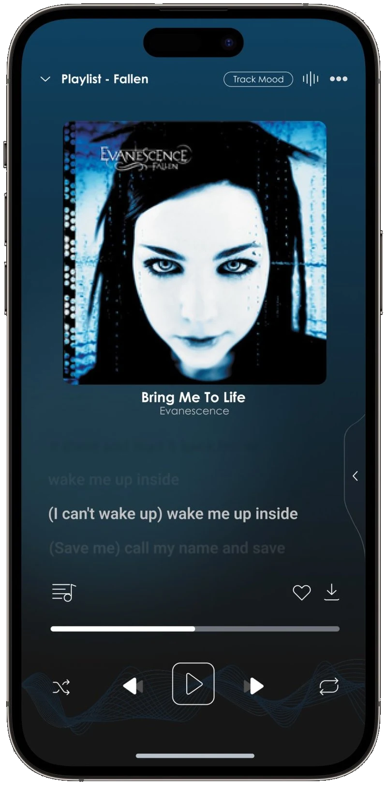
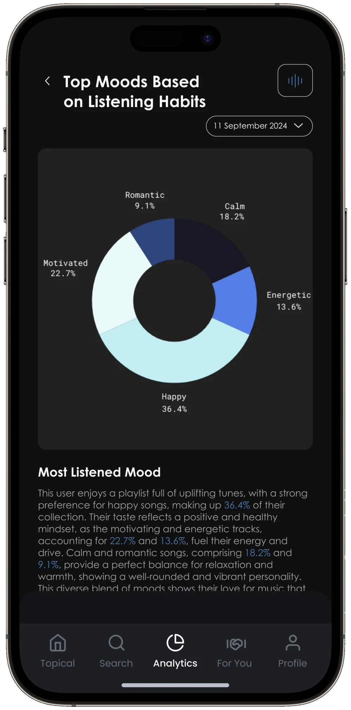

An AI music app that starts from how you feel. Pick a mood, get music that fits, and see how your listening shapes your week.
RoleSolo UX/UI designer
TypeMobile app · AI
Year2024
Scope20+ screens, 5 tabs

Player · Track Mood

Analytics · Top moods
01 · Problem
Streaming asks what you want. Not how you feel.
Music apps are built around search and taste. But when you are tired, stressed or unfocused, choosing a song is one more decision, and the app has no idea what state you are in.
The product doesn’t ask “what song do you want?” first. It asks “what state are you in?” and lets music be the answer.
Decision fatigue
Endless choice makes it harder to start listening when you need it most.
Blind to mood
Recommendations follow past plays, not how the listener feels today.
No reflection
Listeners can’t see how music affects their week.
02 · Process
How I worked
Understand the goal, research the people, shape the structure, then refine.
01Understanding the goal · objectives and user needs
02Research · personas for who listens and why
03Functional design · user flows and structure
04Iterate and refine · design, test, improve
03 · Information architecture
Five tabs, with mood at the centre
Quick sign-in through Google or Apple ID gets people listening fast. Inside, mood shows up in three places: the home screen, search and analytics.
Onboarding
Have an account?
No · Sign upGoogle / Apple IDUsername, email, password
Yes · Log inGoogle / Apple IDUsername, password
Main app · 5 tabs
Topical
Select mood today
Recommended albums
Recommended bands
Curated mixes
New releases
Recent tracks
Search
Feel Your Way
Categories
Recently searched
Analytics
Mood trends over time
Top moods & habits
Most played genres
Most played artists
Most played albums
Listening habits
Impact of music
Weekly summary
For You
Playlists
Liked tracks
Albums
Following
Profile
Settings
Account
Mood features, highlighted
04 · Core flow
Pick a mood, not a song
The mood listening loop. Every session teaches the app a little more.
01Declare mood
Choose a state in plain emotional words, like “Calm” or “Motivated”.
02Blend context
Time of day, recent listening and energy level narrow the playlist.
03Play instantly
One confident recommendation instead of a search box.
04Check in
A light question at the end: did this help?
05Learn
Each answer shapes the next session.
05 · Analytics
Your week, by mood
The Analytics tab turns listening into a mood breakdown with a date filter and an AI-written summary, so listeners can reflect, not just consume.
Happy36.4%
The main mood. Upbeat, everyday listening.
Motivated22.7%
Work sessions and high-energy routines.
Calm18.2%
Late evenings, focus time, low stimulation.
Energetic13.6%
Workouts and commutes.
Romantic9.1%
Smaller, social moments.
06 · Principles
Designed with empathy
Five rules that guided every screen.
01
Mood first
Feeling is the entry point, before genre or artist.
02
Low friction
One tap from mood to music. No search needed.
03
Human language
Labels like “Calm” and “Feel Your Way”, not “Low BPM”.
04
Private by default
Mood history is personal data and stays with the listener.
05
Feedback loop
Small check-ins make the next recommendation better.
One decision colour. Dark neutral surfaces keep the focus on artwork. A single blue, #4877AE, marks every primary action, so the next step is always obvious.